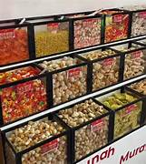

Profil Usaha Kami
Seblak Kartini merupakan usaha mikro kecil dan menengah (UMKM) yang berdiri sejak tahun 2022. Kami berkomitmen untuk menjaga cita rasa khas bumi Pasundan dengan bahan berkualitas dan resep turun-temurun.
Produk Unggulan
-

Seblak Kerupuk Original
-

Seblak Ceker
-

Seblak Komplit
Tahapan Produksi
- Pemilihan bahan baku yang berkualitas
- Proses memasak secara tradisional
- Penyajian makanan yang higienis dan konsisten dengan resep khas